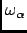
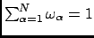
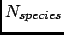
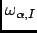

Next: Atom selection
Up: The Analysis menu
Previous: The Analysis menu
Contents
Weighting scheme
In quantities that are averages over all atoms, nMOLDYN gives the possibility to choose between differents atomic weighting
schemes. Presently, nMOLDYN implements the following schemes:
- Equal weighting:
- Mass weighting:
- Atomic number weighting:
- Incoherent neutron scattering:
- Coherent neutron scattering:
where  is the weight for atom  , is the number of (selected) atoms in the system (or in
the subsystem) for which the analysis is performed and , ,
, and
are respectively the
mass, the atomic number, the incoherent scattering length and the coherent scattering length of atom where
, is the number of (selected) atoms in the system (or in
the subsystem) for which the analysis is performed and , ,
, and
are respectively the
mass, the atomic number, the incoherent scattering length and the coherent scattering length of atom where
the average being done over isotopes and relative spin orientations of neutrons and nucleus.
Using such a definition, we have
.
If we now group atoms into their different species A, B ...(e.g. oxygens, hydrogens ...) such that:
where  is the total number of selected species and  is the number of atoms of specie I. Then, we can
define the weight for a given atomic specie I as:
is the number of atoms of specie I. Then, we can
define the weight for a given atomic specie I as:
- Equal weighting (per specie):
 |
(4.9) |
- Mass weighting (per specie):
- Atomic number weighting:
- Incoherent neutron scattering:
- Coherent neutron scattering:
and we have
where
 is the atomic weight of atom of specie defined in equations
4.1 to 4.2. The weigthing scheme based on specie will be useful when dealing with analysis for which
partial terms can be defined.
Next: Atom selection
Up: The Analysis menu
Previous: The Analysis menu
Contents
pellegrini eric
2009-10-06